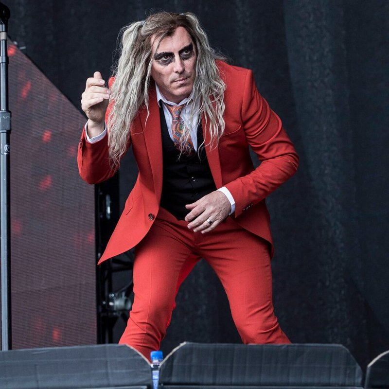

| Nombre: | James Herbert Keenan |
|---|---|
| Nacimiento: | 17 de abril de 1964 |
| Nacionalidad: | Estadounidense |
| Altura: | 1.76 |
| Educación: | Kendall College of Art and Design |
| Ocupación: | Músico, compositor, productor, actor, viticultor |
| Instrumento: | Voz, Bajo eléctrico, Piano, Guitarra, Teclados |
| Miembro de: | Tool |